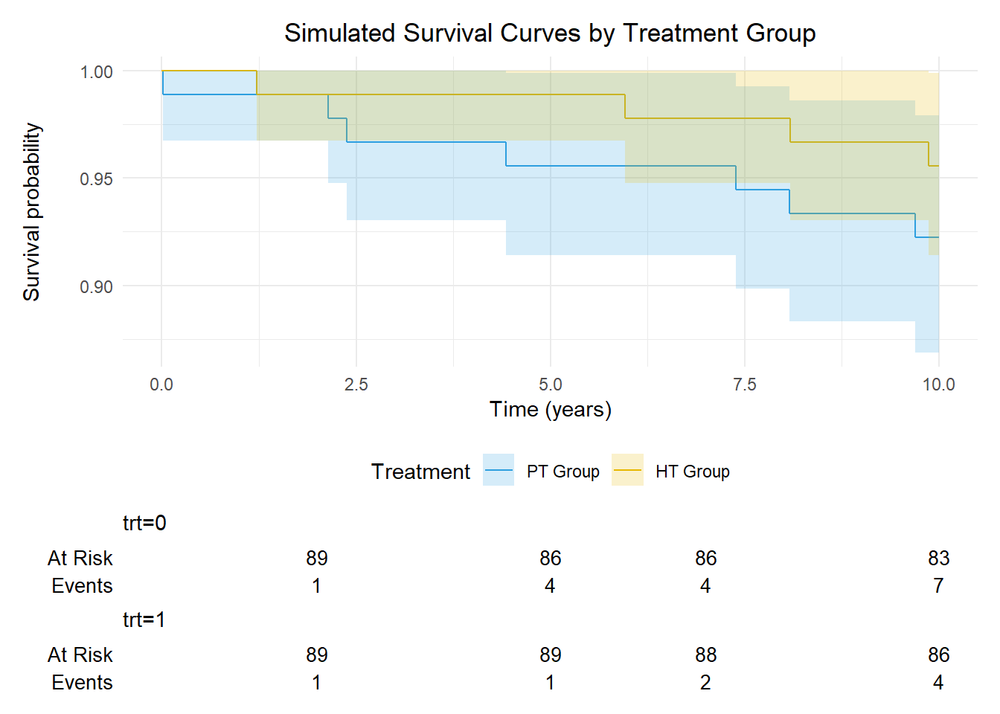
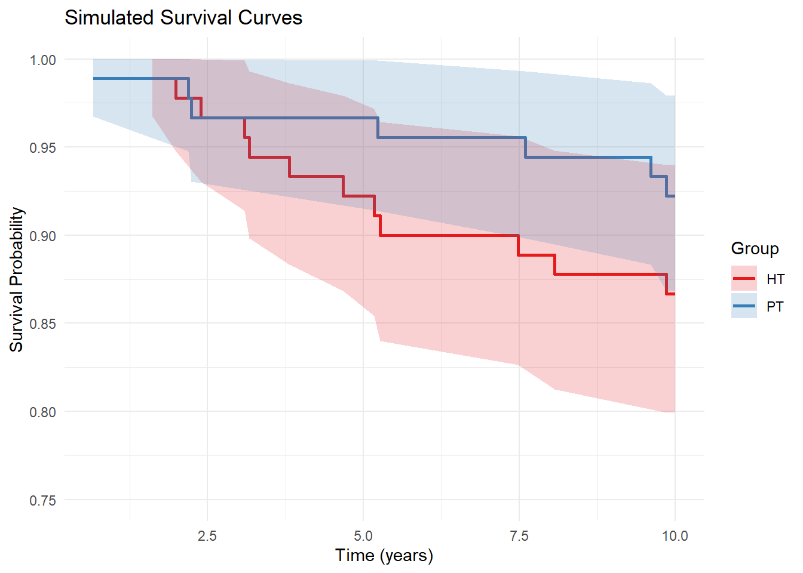
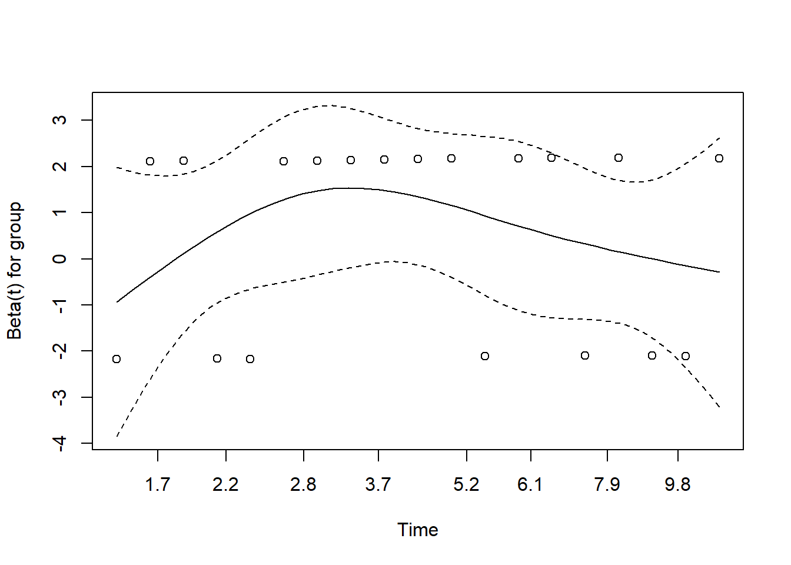
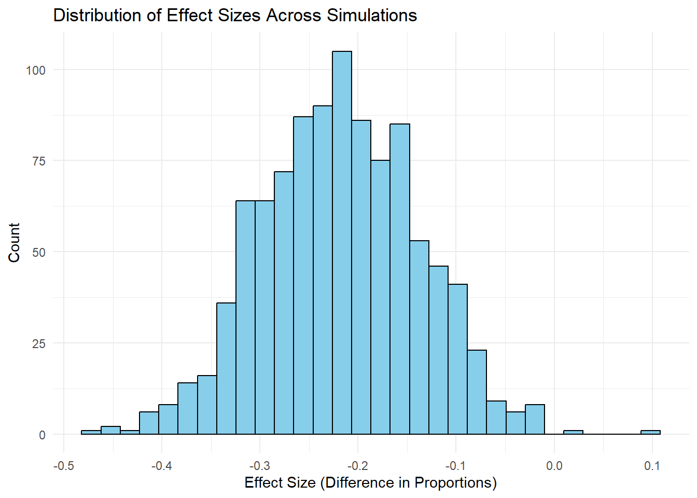

Full citation - Pinczewski, L. A., Lyman, J., Salmon, L. J., Russell, V. J., Roe, J., & Linklater, J. (2007). A 10-Year Comparison of Anterior Cruciate Ligament Reconstructions with Hamstring Tendon and Patellar Tendon Autograft. The American Journal of Sports Medicine, 35(4), 564–574. https://doi.org/10.1177/0363546506296042
Application of forensic meta-science to selected orthopaedic papers: Paper 1 10.1177/0363546506296042 (Pincewski et al 2007)
1 Analysis Preamble
This analysis acts as a training activity to apply techniques described in Heathers 2024.
I will extend this approach, by encapsulating a review within the contemporary reporting guidelines for the trial reported in the paper in question.
1.1 My Conflicts Up Front
I am a shareholder in EBM Analytics.
- I declare an institutional engagement with Smith and Nephew (see below) for a small project >3 years ago.
I would call myself an acquaintance of the study authors
- I have co-authored a paper with Justin Roe (Oussedik et al. 2012).
I have performed the same analyst role as the person responsible in this trial
Am I jealous of the citation record of this article - absolutely not, my interest here is for us to be able to move the conversation forward into the contemporary period and better serve future patients.
1.2 Preparation
Load up required packages in advance. Citations applied to each library at first use in the text.
1.3 Pull Retraction Watch
Cloned the RW git repo to the environment to bounce off later.
Load in database
2 Selected Citation
2.1 Selection Rationale
The selected paper appears at number 2 in “The top 100 most cited articles in Australian orthopaedic surgery” (McMillan and Wijenayake 2024).
It has been cited 288 times (pubmed) or 524 times (crossref), depending on which citation database you trust the most.

3 Bibliometric Analysis
3.1 The paper
Check if it appears in the RW database
There were 0 retractions identifiedThere were 0 comments for this paper on PubPeer [ 15-Feb-2025].
4 Reporting Framework
To provide some structure to scrutinising this article - the following guidelines were utilised.
CONSORT 2010 - (Moher et al. 2010)
CONSORT Abstracts - (Hopewell et al. 2008)
CONSORT Parallel group trials - (Moher et al. 2010; Schulz, Altman, and Moher 2010)
CONSORT Nonpharmacologic treatments - (Boutron et al. 2017)
CONSORT PRO - (Calvert et al. 2013)
CONSORT Harms - (Junqueira et al. 2023)
5 Trial Information
So first things first, this study is not a randomised trial. In the methods, it’s described as a “prospective controlled trial”. More on that later.
5.1 CONSORT [23] Registration
No prior trial registration in clinicaltrials.gov. Manual search 17-Feb-2025.
5.2 CONSORT [24] Trial Protocol
This gets a little bit more interesting. The protocol is not described fully in this paper, but is somewhat described throughout the multiple previous papers from the same trial. As far as I can tell though, there was no protocol published prior to the first follow up paper.
Study with follow up at 7 years - (Roe et al. 2005)
Study with follow up at 5 years - (Pinczewski et al. 2002)
The role of a data monitoring committee.
5.3 CONSORT [25] Funding
Funding provided by
The Australian Institute of Musculoskeletal Research
- A local not-for-profit entity to support research within a group of surgeons in which the senior author was a key influencer
Smith and Nephew Endoscopy
Manufacturer of the fixation and surgical instrumentation for the ACL reconstruction procedures
Fund fellowships for less experienced surgeons to train under the senior author
6 Title and Abstract
6.1 CONSORT [1a] Trial Identification
The title identifies the study as a “prospective controlled trial”.
6.2 CONSORT [1b] Structured summary
The PROs used in the study are not identified in the abstract as primary or secondary outcomes in the trial.
7 Introduction
7.1 CONSORT [2a] Scientific Background and Explanation
7.2 CONSORT [2b] Specific Objectives or Hypotheses
8 Methods - External assessment
This paper should have been put through the wringer by SR-MA of graft type in ACL reconstruction. Let’s do a quick summary of what others have said about the methods through RoB or methodology assessments in previous reviews.
I retrieved the citation list for this paper from citationchaser (the shiny app, I cant be bothered signing up for a plan for the API access) (Haddaway2022?). It conducts a search through lens.org.
Reading file C:/Users/cscho//Documents/GitHub/Forensic-Paper1/Paper1Citations ... doneFilter down for recent systematic reviews
8.1 Risk of Bias
One systematic review (Janssen et al. 2017) used the Cochrane library checklist for RCTs, with two reviewers conducting independent ratings. The authors classified this trial as a clinical controlled trial (no formal randomisation). The overall rating from the combined checklist score was Questionable (score was between 30% and 50%).
A more recent review (Sollberger et al. 2022) attempted to assess long term results after ACLR with PT vs HS autograft with a min follow up of 10 years, but did not include this paper in their analysis.
Another review (Migliorini et al. 2020) included it in their quality assessment, but did not break down their RoB ratings by individual paper.
9 Methods - Trial Design
9.1 CONSORT [3a] Description of trial design
Prospective controlled trial.
This doesnt really have any meaning. Is it that the HS group is being compared to the PT control? Let’s assume that’s the case. This is really an interrupted cohort study, or an interrupted time series.
9.2 CONSORT [3b] Changes to methods after trial commencement
Changes to eligibility may have altered or been reinterpreted at some point after trial commencement.
10 Methods - Participants
10.1 CONSORT [4a] Eligibility criteria
Recreate eligibility for clarity
| Category | Inclusion | Exclusion | Comments |
|---|---|---|---|
| Patient | Desire return to competitive activity | ||
| Pathology | Complete ACL rupture | Additional ligament injury such that reconstruction was deemed necessary | |
| Grade 2 Lachman (or above) | Chondral damage | ||
| Positive pivot shift | |||
| Treatment | Meniscal damage such that meniscectomy of >1/3 of one (medial or lateral) meniscus was required | ||
| Other | Failed nonoperative treatment | Previous meniscectomy | |
| Abnormal radiographic image | |||
| Abnormal contralateral knee | |||
| Patients seeking compensation for their injury | |||
| Patients who did not wish to participate in a research program |
Yes, the representativeness of the sample is questionable for reasons.
A trial of this type need not be representative, as the aims of a trial are to “Provide evidence for relative treatment effectiveness over an adequate time horizon for assessing target patient outcomes” (Harrell, 2023). Harrell goes on to note that knowledge of the relative effect from an RCT combined with the absolute risk of an outcome from observational data can be combined to assess individual treatment efficacy. Others have observed that treatment effects can remain the same even when trial participants differ from the target population (Bradburn et al. 2020), this needs to be replicated in our present context here though. Still others have argued against the ingrained notion in clinical science that representative patient samples are the only mechanism by which findings can be appropriately generalised (Rothman, Gallacher, and Hatch 2013).
The authors have mentioned that the trial can be used to establish a baseline of outcomes in this population, and I think this an overreach given the limitations on its external validity.
Single-centre and single-surgeon study, eligibility criteria for centres and care providers not required.
10.2 CONSORT [4b] Settings and locations of data collection
11 Methods - Interventions
11.1 CONSORT [5] Interventions for each Group
12 Methods - Outcomes
12.1 CONSORT [6a] Primary and Secondary
| Category | Outcome | Type | Comments |
|---|---|---|---|
| Adverse Events | Ipsilateral graft intact | Time to event | |
| Contralateral ligament intact | Binary; Time to event | ||
| Ipsilateral adverse events (complications) | Binary | ||
| Ipsilateral further surgery | Binary | ||
| Harvest site symptoms | Ordinal | ||
| Subjective symptoms | Symptoms with strenuous activity (IKDC) | Ordinal | |
| Lysholm Knee Score | Continuous | ||
| Sports participation | Binary | ||
| Knee-related reduction in activity | Binary | ||
| Kneeling pain | Continuous | ||
| Objective testing | Lachman Grade | Ordinal | |
| Pivot Shift | Binary | ||
| Instrumented Laxity | Binary |
12.2 CONSORT [6b] Changes after commencement
Outcome switching from trial plan - commencement to analysis and reporting is problematic in trials (Altman, Moher, and Schulz 2017). This is one of the key weaknesses of this work - the outcomes have been potentially switched from one paper to the next based on interest over time. With no firm primary outcome stated early on in the reporting process or pre-specified, it is entirely possible that reported outcomes have been prioritised based on i) altered levels of interest over time or ii) levels of significance at the time of comparison.
13 Methods - Sample size
This is the biggest mystery of this paper I think. The methods description is very clear about what the sample size is, but really nothing about how it was determined. The only mention of power is in the discussion of (Pinczewski et al. 2002) to say that the study is underpowered for detecting a difference in graft rupture.
Ultimately, I can run some simulations here to prove the point, but I just dont think this study was adequately powered for any of the comparisons it has made between the groups.
13.1 CONSORT [7a] Determination
Not described in the paper.
Approach: Normal Approximation
Difference between Two Proportions
(Independent Samples z Test)
H0: p1 = p2
HA: p1 != p2
------------------------------
Statistical power = 0.794
n1 = 74
n2 = 74
------------------------------
Alternative = "not equal"
Non-centrality parameter = 2.781
Type I error rate = 0.05
Type II error rate = 0.206 We’ll turn our attention to the time to event analysis of graft rupture.
First - simulate a time to event dataset based on the reported findings.
The 10 year survival was 86 (95%CI 79 - 94) for the HT group and 92 (95%CI 86 - 98) for the PT group
The 10 year survival was 86% (95%CI 79 - 94) for the HT group and 92% (95%CI 86 - 98) for the PT group. This produces a hazard ratio of 1.07.
We can reproduce the survival
PT Group (trt=0) 10-year survival: 92.2 %PT Group 95% CI: 86.9 - 97.9 %HT Group (trt=1) 10-year survival: 95.6 %HT Group 95% CI: 91.4 - 99.9 %Hazard Ratio: 0.56 

Call: survfit(formula = Surv(time, status) ~ group, data = dt)
group=HT
time n.risk n.event survival std.err lower 95% CI
10.0000 78.0000 12.0000 0.8667 0.0358 0.7992
upper 95% CI
0.9398
group=PT
time n.risk n.event survival std.err lower 95% CI
10.0000 83.0000 7.0000 0.9222 0.0282 0.8685
upper 95% CI
0.9792 Call:
coxph(formula = Surv(time, status) ~ group, data = dt)
n= 180, number of events= 19
coef exp(coef) se(coef) z Pr(>|z|)
groupPT -0.5701 0.5655 0.4756 -1.199 0.231
exp(coef) exp(-coef) lower .95 upper .95
groupPT 0.5655 1.768 0.2226 1.436
Concordance= 0.57 (se = 0.056 )
Likelihood ratio test= 1.49 on 1 df, p=0.2
Wald test = 1.44 on 1 df, p=0.2
Score (logrank) test = 1.48 on 1 df, p=0.2$mat.lambda
time lambda RRlambda delta A B C D
[1,] 0.000000 0.00000000 0.00000000 0 NA NA 1 NA
[2,] 0.668250 0.01111111 0.01188889 0 1.0000000 1.0000000 1 0.01111111
[3,] 2.187030 0.01123596 0.01202247 0 0.9888889 0.9881111 1 0.01111111
[4,] 2.233560 0.01136364 0.01215909 0 0.9777778 0.9762316 1 0.01111111
[5,] 5.231296 0.01149425 0.01229885 0 0.9666667 0.9643615 1 0.01111111
[6,] 7.595181 0.01162791 0.01244186 0 0.9555556 0.9525009 1 0.01111111
[7,] 9.609483 0.01176471 0.01258824 0 0.9444444 0.9406501 1 0.01111111
[8,] 9.854128 0.01190476 0.01273810 0 0.9333333 0.9288089 1 0.01111111
[9,] 10.000000 0.00000000 0.00000000 1 0.9222222 0.9169777 1 0.00000000
E
[1,] NA
[2,] 0.01188889
[3,] 0.01187954
[4,] 0.01187009
[5,] 0.01186054
[6,] 0.01185088
[7,] 0.01184112
[8,] 0.01183126
[9,] 0.00000000
$mat.event
time nEvent.C nCensored.C nSurvive.C nRisk.C
[1,] 0.000000 0 0 0 90
[2,] 0.668250 1 0 89 90
[3,] 2.187030 1 0 88 89
[4,] 2.233560 1 0 87 88
[5,] 5.231296 1 0 86 87
[6,] 7.595181 1 0 85 86
[7,] 9.609483 1 0 84 85
[8,] 9.854128 1 0 83 84
[9,] 10.000000 0 83 0 83
$pC
[1] 0.07777778
$pE
[1] 0.08302232
$power
[1] 0.03352645$mat.lambda
time lambda RRlambda delta A B C D
[1,] 0.000000 0.00000000 0.00000000 0 NA NA 1 NA
[2,] 0.668250 0.01111111 0.01666667 0 1.0000000 1.0000000 1 0.01111111
[3,] 2.187030 0.01123596 0.01685393 0 0.9888889 0.9833333 1 0.01111111
[4,] 2.233560 0.01136364 0.01704545 0 0.9777778 0.9667603 1 0.01111111
[5,] 5.231296 0.01149425 0.01724138 0 0.9666667 0.9502814 1 0.01111111
[6,] 7.595181 0.01162791 0.01744186 0 0.9555556 0.9338973 1 0.01111111
[7,] 9.609483 0.01176471 0.01764706 0 0.9444444 0.9176084 1 0.01111111
[8,] 9.854128 0.01190476 0.01785714 0 0.9333333 0.9014153 1 0.01111111
[9,] 10.000000 0.00000000 0.00000000 1 0.9222222 0.8853186 1 0.00000000
E
[1,] NA
[2,] 0.01666667
[3,] 0.01657303
[4,] 0.01647887
[5,] 0.01638416
[6,] 0.01628891
[7,] 0.01619309
[8,] 0.01609670
[9,] 0.00000000
$mat.event
time nEvent.C nCensored.C nSurvive.C nRisk.C
[1,] 0.000000 0 0 0 90
[2,] 0.668250 1 0 89 90
[3,] 2.187030 1 0 88 89
[4,] 2.233560 1 0 87 88
[5,] 5.231296 1 0 86 87
[6,] 7.595181 1 0 85 86
[7,] 9.609483 1 0 84 85
[8,] 9.854128 1 0 83 84
[9,] 10.000000 0 83 0 83
$pC
[1] 0.07777778
$pE
[1] 0.1146814
$ssize
nE nC
1020 1020 
chisq df p
group 0.014 1 0.91
GLOBAL 0.014 1 0.9113.2 CONSORT [7b] Interim Analyses and Stopping
The series of papers making up reporting of this trial really needed a more comprehensive approach to stopping parameters and planning for interim analyses, at what turned out to be 5, 7 and 10 year follow ups.
Interim analyses for efficacy allow a trial to be stopped early (Ciolino, Kaizer, and Bonner 2023). With the benefit of hindsight, there are a number of issues with long-term follow up of ACL reconstruction that confound a comparison between graft types at such a long follow up period. Namely, the incidence and severity of osteoarthritis present in each group. Considering the quality of reconstruction is one (arguably minor) component of osteoarthritis after ACL rupture, the validity of the comparison could be questioned.
In defence of the authors, the natural history of post-ACL rupture OA was still a developing concept when this study was implemented. Nevertheless, the lack of planning of longer-term followup or interim analyses and how they are compensated in the comparisons needs to be addressed in more detail.
14 Methods - Randomisation
This was an attempted RCT that failed due to recruitment refusal.
“On October 28, 1993, we began a prospective randomized study of consenting patients who met the required criteria. However, by April 10, 1994, although 52 patients had been randomized, no further patients agreed to participate in randomization. This was because the patients were noticing, through comments from the physical therapist, that the use of hamstring tendon graft led to a more rapid recovery from surgery.” (Pinczewski et al. 2002)
I dont even know what to do with this.
Clinical equipoise (didnt exist it seems)
Patient selection - exclusivity (patients were self-selected based on perioperative care and functional constraints imposed)
14.1 CONSORT [8a] Sequence Method
14.2 CONSORT [8b] Sequence Type
14.3 CONSORT [9] Allocation concealment
14.4 CONSORT [10] Implementation
14.5 CONSORT [11a] Blinding (Who)
There is no mention of blinding in any of the articles related to this trial. Even if randomisation didnt occur, blinding of everyone involved in the trial (as much as practicable), but particularly those responsible for measurement and analysis is crucial to mitigate potential biases. Especially when industry funding is in the mix.
14.6 CONSORT [11b] Intervention Similarity
Not applicable
15 Methods - Statistical Methods
The analysis description in this paper, definitively comparing graft types in ACLR reconstruction, is a total of four sentences. I just don’t think this would (or should) pass muster in the contemporary period.
The data structure clearly has dependency within patients over time points, but is likely under-sampled to cater for a fully specified model (mixed effects). See Sample Size.
Let’s breakdown each sentence;
The outcomes were compared between the two groups at 10 years using the Mann-Whitney U test for the continuous measurements (KT1000, range of motion, Lysholm score) and ordered categorical variables (such as IKDC categories).
Well, this is a cracking start - theoretically an MW U test can be applied to ordinal categorical responses, but gee-whiz, there are better approaches to use, particularly in this context. First of all, how were ties between groups corrected for? I suspect they werent and that means for a study that was probably already on the limits of power for the implied comparisons, using this test in this way chips away at what little power remained. Also, many of the variables are binary responses, which this test really wouldnt be appropriate for.
Second, “at 10 years” is a bit misleading, as comparisons at the earlier time points are also made.
Wilcoxon signed rank test was used to assess changes over time.
Combining t-tests like this for within and between-group comparisons is quite the sign that a more comprehensive model should be employed here.
Linear regression analysis was used to assess relationship between selected dependent and independent variables.
So close, yet so far - linear regression gets a guernsey, but not to do with anything related to the aims of the paper. Almost made it.
Statistical significance was assessed at the 5% level.
While this is good to know, there are lots of other details we need before we get to this.
15.1 CONSORT [12a] Comparison Between Groups
There are a metric tonne of comparisons between groups in this paper. Let’s see if we can table up what we’re looking at.
Data assumption was non-parametric.
| Category | Outcome | Type | Model - Test | Comments |
|---|---|---|---|---|
| Adverse Events | Ipsilateral graft intact | Time to event | Nil (KM used to establish survival rates) | A risk table would have been helpful |
| Contralateral ligament intact | Binary; Time to event | Nil (KM used to establish survival rates) | A risk table would have been helpful | |
| Ipsilateral adverse events (complications) | Binary | Between-Group: Mann-Whitney U Test | Suspect not a valid test | |
| Ipsilateral further surgery | Binary | Between-Group: Mann-Whitney U Test | Suspect not a valid test | |
| Harvest site symptoms | Ordinal | Between-Group: Mann-Whitney U Test | ||
| Subjective symptoms | Symptoms with strenuous activity (IKDC) | Ordinal | Between-Group: Mann-Whitney U Test | |
| Lysholm Knee Score | Continuous | Between-Group: Mann-Whitney U Test | ||
| Sports participation | Binary | Between-Group: Mann-Whitney U Test | Suspect not a valid test | |
| Knee-related reduction in activity | Binary | Between-Group: Mann-Whitney U Test | Suspect not a valid test | |
| Kneeling pain | Continuous | Between-Group: Mann-Whitney U Test | ||
| Objective testing | Lachman Grade | Ordinal | Between-Group: Mann-Whitney U Test | |
| Pivot Shift | Binary | Between-Group: Mann-Whitney U Test | Suspect not a valid test | |
| Instrumented Laxity | Binary | Between-Group: Mann-Whitney U Test | Suspect not a valid test | |
| Range of motion - extension | Binary | Between-Group: Mann-Whitney U Test | Suspect not a valid test | |
| Single-leg hop test | Binary | Nil | ||
| Operative Findings | Meniscal Injury | Binary | Between-Group: Mann-Whitney U Test | Suspect not a valid test |
| Meniscal Treatment | Binary | Between-Group: Mann-Whitney U Test | Suspect not a valid test | |
| Radiographic | IKDC grading x-ray | Ordinal | Between-Group: Mann-Whitney U Test | |
| Composite | IDEAL outcome | Binary | Between-Group: Mann-Whitney U Test | Suspect not a valid test |
15.2 CONSORT [12b] Additional Analyses
No subgroup analyses or adjusted analyses were performed.
16 Results
Let’s roll through the results by section and make some notes as we go.
16.1 CONSORT [13a] Participant Flow
Some general comments are;
The participant flow is explained in text, but this would be so much easier to understand with a flow chart. Especially trying to understand who was eligible for which outcomes at which follow up. I assume they didnt ask graft failure patients to be included at the post-failure timepoints for example.
There is clearly a concerted effort to retrieve patients (in some form) at 5 years, compared to the 4 year followup (Table 1 (Pinczewski et al. 2002)).
There is a risk of survivor bias in the PROMs assessment at 10 years with ~25% of cases failed by then. What would happen if a comparison were made based on ITT?
The followup of patients at the final timepoint is noted in the follow-up section. This could be communicated more effectively with a comprehensive flowchart incorporating all published timepoints.
16.2 CONSORT [13b] Losses and Exclusions per Group
This is done reasonably well, but see comments above with respect to differentiating eligibility of different outcome measures.
16.3 CONSORT [14a] Recruitment Period
PT Group - Jan-1993 to Apr-1994
HT Group - Oct-93 to Nov-1994
The authors state “senior author…after Apr-1994..used the HT graft exclusively”. Does this comparison not include the learning curve for HT? Why not start recruitment of HT group after Apr-1994?
The specific followup dates are not included in any of the trial papers - this is particularly important for interpreting the PROMs.
16.4 CONSORT [14b] Trial Termination
No description of trial termination in the methods. However, there is a section in (Pinczewski et al. 2002) talking about abandoning the trial due to recruitment failure (see Randomisation).
16.5 CONSORT [15] Baseline Data
Well, first of all - I’m not sure this would pass HREC in this day and age. ACL reconstruction in skeletally immature individuals is a different set of ethical considerations to adults and I’m not sure that would pass muster in the present environment. Considering the narrowness of the inclusion critera, adding in immature patients into the sample is an interesting choice.
The IKDC is also not validated for paediatric patients. In their defence, the paediatric version of the IKDC would not be published for another decade (Nasreddine et al. 2016). It is also contended that the Lysholm is not validated for paediatric populations (Fabricant et al. 2020).
The proportion of females 0 (0.36, 0.57) is pretty much in line with the NZ ACL Registry 0.432 (0.43, 0.44)
Comparison between groups for age as reported
Now let’s have a look at age.
25
TRUE 24
TRUE Do a comparison - we have to assume the median and the means are the same in this sample.
Using a st
16.6 CONSORT [16] Numbers Analysed
16.7 CONSORT [17a] Outcomes and Estimation
16.8 Scrutiny
Let’s try out some checks -see how far we get. Let’s use statcheck first, see if we can get a bite.
|
| | 0%
|
|======================================================================| 100%
statcheck did not find any resultsThis is not surprising - the results are not formatted in APA style (not unusual for the field).
Next, let’s see if we can replicate a selection of the p-values. Let’s simulate the groups.
[1] "Bootstrap Simulation Results:"[1] "Mean p-value: 0.0529"[1] "95% CI for p-value: 0.0457" "95% CI for p-value: 0.0601"[1] "Mean effect size (difference in proportions): -0.2183"[1] "95% CI for effect size: -0.2232" "95% CI for effect size: -0.2133"[1] "Percentage of significant results: 76.7 %"
Survival analysis - confounding by contralateral rupture (more ruptures, less chance of ipsilateral rupture)
CONSORT [17a2] Outcomes Omitted
16.9 CONSORT [17b] Binary Outcomes
Relative effect sizes are not reported in this trial.
16.10 CONSORT [18] Ancillary Analyses
16.11 CONSORT [19] Harms
17 Discussion
17.1 CONSORT [20] Limitations
17.2 CONSORT [21] Generalisability
17.3 CONSORT [22] Interpretation
18 References
Altman, Douglas G, David Moher, and Kenneth F Schulz. 2017. “Harms of Outcome Switching in Reports of Randomised Trials: CONSORT Perspective.” BMJ, February, j396. https://doi.org/10.1136/bmj.j396.
Boutron, Isabelle, Douglas G. Altman, David Moher, Kenneth F. Schulz, and Philippe Ravaud. 2017. “CONSORT Statement for Randomized Trials of Nonpharmacologic Treatments: A 2017 Update and a CONSORT Extension for Nonpharmacologic Trial Abstracts.” Annals of Internal Medicine 167 (1): 40–47. https://doi.org/10.7326/m17-0046.
Bradburn, Mike J., Ellen C. Lee, David A. White, Daniel Hind, Norman R. Waugh, Deborah D. Cooke, David Hopkins, Peter Mansell, and Simon R. Heller. 2020. “Treatment Effects May Remain the Same Even When Trial Participants Differed from the Target Population.” Journal of Clinical Epidemiology 124 (August): 126–38. https://doi.org/10.1016/j.jclinepi.2020.05.001.
Calvert, Melanie, Jane Blazeby, Douglas G. Altman, Dennis A. Revicki, David Moher, Michael D. Brundage, and for the CONSORT PRO Group. 2013. “Reporting of Patient-Reported Outcomes in Randomized Trials.” JAMA 309 (8): 814. https://doi.org/10.1001/jama.2013.879.
Ciolino, Jody D., Alexander M. Kaizer, and Lauren Balmert Bonner. 2023. “Guidance on Interim Analysis Methods in Clinical Trials.” Journal of Clinical and Translational Science 7 (1). https://doi.org/10.1017/cts.2023.552.
Fabricant, Peter D., Christopher M. Brusalis, Jonathan M. Schachne, Matthew J. Matava, Christian N. Anderson, Michael T. Busch, Henry G. Chambers, et al. 2020. “Which Metrics Are Being Used to Evaluate Children and Adolescents After ACL Reconstruction? A Systematic Review.” Arthroscopy, Sports Medicine, and Rehabilitation 2 (4): e417–28. https://doi.org/10.1016/j.asmr.2020.04.006.
Hopewell, Sally, Mike Clarke, David Moher, Elizabeth Wager, Philippa Middleton, Douglas G Altman, and Kenneth F Schulz. 2008. “CONSORT for Reporting Randomised Trials in Journal and Conference Abstracts.” The Lancet 371 (9609): 281–83. https://doi.org/10.1016/s0140-6736(07)61835-2.
Janssen, Rob PA, Nicky van Melick, Jan BA van Mourik, Max Reijman, and Lodewijk W van Rhijn. 2017. “Similar Clinical Outcome Between Patellar Tendon and Hamstring Tendon Autograft After Anterior Cruciate Ligament Reconstruction with Accelerated, Brace-Free Rehabilitation: A Systematic Review.” Journal of ISAKOS 2 (6): 308–17. https://doi.org/10.1136/jisakos-2016-000110.
Junqueira, Daniela R, Liliane Zorzela, Susan Golder, Yoon Loke, Joel J Gagnier, Steven A Julious, Tianjing Li, et al. 2023. “CONSORT Harms 2022 Statement, Explanation, and Elaboration: Updated Guideline for the Reporting of Harms in Randomised Trials.” BMJ, April, e073725. https://doi.org/10.1136/bmj-2022-073725.
McMillan, Lachlan B., and Lahann Wijenayake. 2024. “The Top 100 Most Cited Articles in Australian Orthopaedic Surgery.” Journal of Orthopaedic Reports 3 (4): 100348. https://doi.org/10.1016/j.jorep.2024.100348.
Migliorini, Filippo, Jörg Eschweiler, Yasser El Mansy, Valentin Quack, Markus Tingart, and Arne Driessen. 2020. “Quadriceps Tendon Autograft for Primary ACL Reconstruction: A Bayesian Network Meta-Analysis.” European Journal of Orthopaedic Surgery & Traumatology 30 (7): 1129–38. https://doi.org/10.1007/s00590-020-02680-9.
Moher, D., S. Hopewell, K. F Schulz, V. Montori, P. C Gotzsche, P J Devereaux, D. Elbourne, M. Egger, and D. G Altman. 2010. “CONSORT 2010 Explanation and Elaboration: Updated Guidelines for Reporting Parallel Group Randomised Trials.” BMJ 340 (mar23 1): c869–69. https://doi.org/10.1136/bmj.c869.
Nasreddine, Adam Y., Patricia L. Connell, Leslie A. Kalish, Susan Nelson, Maura D. Iversen, Allen F. Anderson, and Mininder S. Kocher. 2016. “The Pediatric International Knee Documentation Committee (Pedi-IKDC) Subjective Knee Evaluation Form: Normative Data.” The American Journal of Sports Medicine 45 (3): 527–34. https://doi.org/10.1177/0363546516672456.
Oussedik, Sam, Corey Scholes, Duncan Ferguson, Justin Roe, and David Parker. 2012. “Is Femoral Component Rotation in a TKA Reliably Guided by the Functional Flexion Axis?” Clinical Orthopaedics & Related Research 470 (11): 3227–32. https://doi.org/10.1007/s11999-012-2515-0.
Pinczewski, Leo A., David J. Deehan, Lucy J. Salmon, Vivianne J. Russell, and Amanda Clingeleffer. 2002. “A Five-Year Comparison of Patellar Tendon Versus Four-Strand Hamstring Tendon Autograft for Arthroscopic Reconstruction of the Anterior Cruciate Ligament.” The American Journal of Sports Medicine 30 (4): 523–36. https://doi.org/10.1177/03635465020300041201.
Pinczewski, Leo A., Jeffrey Lyman, Lucy J. Salmon, Vivianne J. Russell, Justin Roe, and James Linklater. 2007. “A 10-Year Comparison of Anterior Cruciate Ligament Reconstructions with Hamstring Tendon and Patellar Tendon Autograft.” The American Journal of Sports Medicine 35 (4): 564–74. https://doi.org/10.1177/0363546506296042.
Roe, Justin, Leo A. Pinczewski, Vivianne J. Russell, Lucy J. Salmon, Tomomaro Kawamata, and Melvin Chew. 2005. “A 7-Year Follow-up of Patellar Tendon and Hamstring Tendon Grafts for Arthroscopic Anterior Cruciate Ligament Reconstruction.” The American Journal of Sports Medicine 33 (9): 1337–45. https://doi.org/10.1177/0363546504274145.
Rothman, K. J., J. E. Gallacher, and E. E. Hatch. 2013. “Why Representativeness Should Be Avoided.” International Journal of Epidemiology 42 (4): 1012–14. https://doi.org/10.1093/ije/dys223.
Schulz, Kenneth F, Douglas G Altman, and David Moher. 2010. “CONSORT 2010 Statement: Updated Guidelines for Reporting Parallel Group Randomised Trials.” BMC Medicine 8 (1). https://doi.org/10.1186/1741-7015-8-18.
Sollberger, V. D., A. Korthaus, A. Barg, and G. Pagenstert. 2022. “Long-Term Results After Anterior Cruciate Ligament Reconstruction Using Patellar Tendon Versus Hamstring Tendon Autograft with a Minimum Follow-up of 10 Yearsa Systematic Review.” Archives of Orthopaedic and Trauma Surgery 143 (7): 4277–89. https://doi.org/10.1007/s00402-022-04687-9.